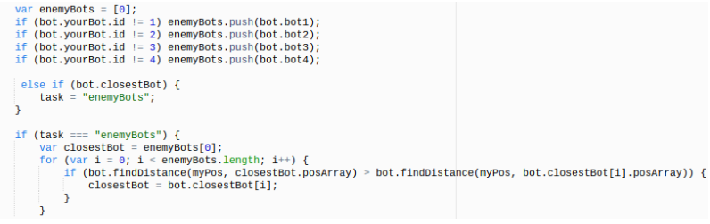

☰ Menu
Attacking
 Attacking other bots is very key in winning the match, because it allows you to protect your mines, your bots, and lets you take other enemies’ bots mines, to get points. This code above, allows my bot to attack any of the other 3 bots in the game. Similar to the code of the taverns, and mines, the code finds all the enemy bots, and looks for the closest enemy bot near my bots location. It commands the bot to go and attack the closest bot to itself. The code finds the closest enemy bots by first creating and else if statement, that checks if the enemy bot is the task of my bot. If the statement is true, then it means that the task is equal to enemyBots. It begins to create an array which stores the id, and location of each enemy bot. The bot locates the closest enemy bot by looping through the array of enemy bots, and looks at the length of every enemy bot between my bot and them. The enemy bot that is the closest to my bot, will be attacked by my bot. My bot finds the (x, y) coordinates of the enemy bot, and makes an attack. The reason why I located the closest enemy bot to my bot, was that I wanted to make the bot function quicker. If my bot would go around looking for enemy bots with no information of each one’s location, it would be unaware of the enemy bots trying to attack it. So finding the location of each enemy bot, and letting my bot know, helps my bot be able to attack. Finding the closest enemy bot to my bot saves me the hassle of having to go find the enemies that are way farther than my bot. It gives me a better chance at being able to attack other enemy bots. Deciding How
To give my bot the capabilities of attacking other bots, I had to identify how I would tell it how to attack. The 4 if statements in the beginning of the code, were already included. They serve the purpose of keeping the id of every enemy bot, to give to the bot later. I began with creating an else if statement with the condition of the bot.closestBot. Which is an array of all the enemy bots. The condition is run, and set the task to enemyBots. I made an if statement similar to the code of the taverns, and the mines to check if it’s true that task is equal to enemyBots. After the statement is true, the bot observes the enemy bot array, and looks through it. I produced a “for” loop to command the bot to look at the distance between my bot and all enemy bots. My bot looks through the array and determines which enemy bot is the closest in distance. My bot has identified the closest enemy bot, and so it moves on to complete the task of attacking the enemy bot.